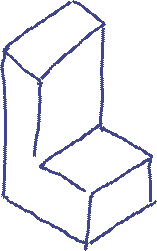
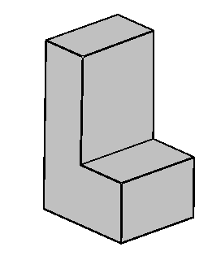

1 GENERALITIES
1.1 Main
| This handbook provides a practical hands-on introduction to Sketch-Based Modeling (SBM) for engineering design and serves as a help guide for the SBM software application REFER. |
REFER (from the Catalan "Repetir o tornar a fer una cosa que s'ha desfet", meaning "to repeat or redo something that has been undone") is a research-oriented software application designed to offer a state-of-the-art perspective on Sketch-Based Modeling (SBM). It serves both as a modular framework and an experimental laboratory for developing, exploring, and validating SBM algorithms and techniques. We distinguish between two primary branches of SBM: the artistic branch, which aims to support intuitive 3D content creation from hand-drawn inputs; and the engineering branch, which focuses on generating precise 3D models suitable for integration into CAD/CAM/CAE workflows. REFER is specifically oriented toward the engineering branch, offering tools and functionalities that support the accurate interpretation and reconstruction of technical sketches for engineering design purposes.


REFER is not intended as a commercial software:
This program is free and open source software. You can redistribute it and/or modify it under the terms of the GNU General Public License, as published by the Free Software Foundation.
This program is intended for academic and research purposes only. It is distributed WITHOUT ANY WARRANTY; not even the implied warranty of MERCHANTABILITY or FITNESS FOR A PARTICULAR PURPOSE.
REFER is an incomplete software system under permanent evolution and released as a work-in-progress. It is provided as-is, with the intent of sharing a functional architecture and a set of core algorithms that can serve as a foundation for further development. Our goal is to support the research community by offering a modular platform that others can build upon, refine, and extend-contributing to the advancement of Sketch-Based Modeling (SBM) in engineering design.
**********************************************
The book is structured in the following seven chapters:
1. Generalities.
2. Input.
3. Reconstruction.
4. Display.
5. Output.
6. Implementation.
7. Final remarks.
Chapter 1, entitled "Generalities", includes a section that provides detailed information about the evolution of REFER, along with guidance on getting REFER installed and how to get started. It also contains an introductory section on the fundamentals of Sketch-Based Modeling (SBM). As mentioned earlier, this work is not simply a manual for a specific application, it also serves as a broader review of SBM concepts and methodologies.
Readers who intend to use this book as a manual should note that it is structured into chapters and sections that follow the logical stages involved in transforming a 2D sketch into a 3D model. Each chapter includes explanations of how and why the application behaves the way it does (or does not), with visuals to clarify behavior. Larger topics are further broken down into sub-chapters for ease of navigation and understanding. Chapter 6 is especially relevant for those who wish to explore the source code or contribute to modifying and extending the application.
Readers who plan to use this book as a general review of SBM may skip Chapter 1 (except for the SBM overview) and Chapter 6, as well as detailed software-specific content located at the end of other chapters. Instead, they are encouraged to focus on the introductory sections of each chapter, which provide rich context and a state-of-the-art overview of the SBM process. Chapter 7, in particular, discusses current challenges and future directions in Sketch-Based Modeling.